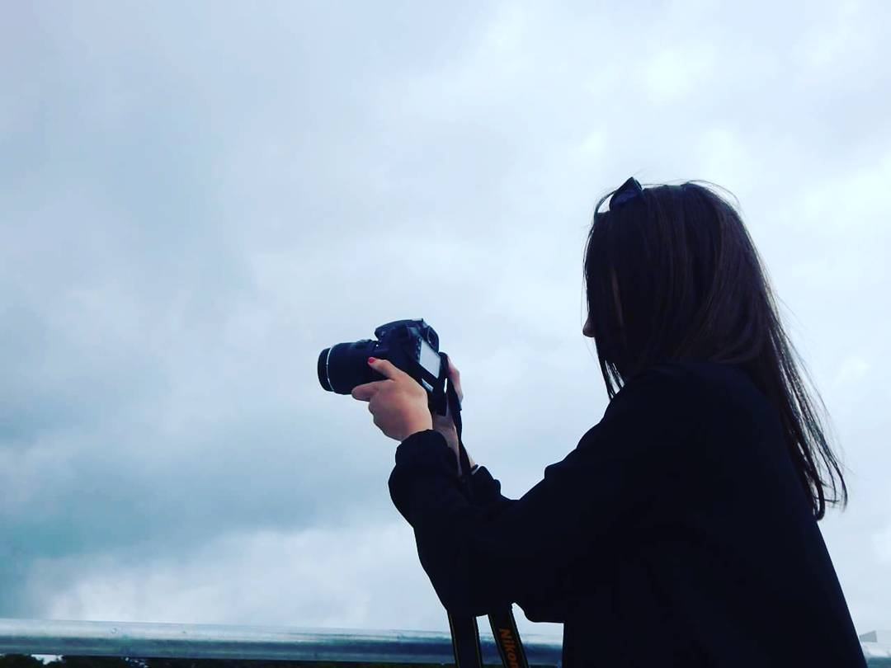

MyDigitalSchool - Nantes
Après l'obtention de mon Baccalauréat STMG, j'ai réalisé une formation en DUT MMI qui m'a permis de développer mes connaissances dans divers domaines. En effet, cette formation polyvalente m'a permis d'acquérir de nouvelles compétences en réalisant de nombreux projets, que ce soit dans le domaine de la communication, l'infographie ou encore l'audiovisuel.
Lors de ma deuxième année d'étude, la réalisation d'un stage alterné sur une période de 6 mois a renforcé en moi ma prise d'initiative, mon autonomie et ma confiance en moi.
En découvrir davantage...